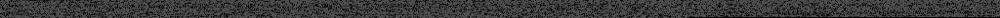
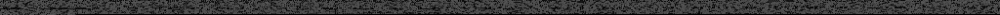
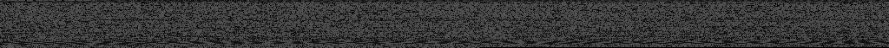

| THREE | rev.66 | 98.kb 23% | link |
|
| OIMO | dev.1.1.0a | 31.kb 21% | link |
|
| OIMO | rev.1.0.0 | 29.kb 20% | link |
|
| RVO | rev.0.1a | 5.kb 26% | link |
|  |
| SEA3D | rev.1.6.0.4 | 15.kb 25% | link |
|
| TWEENLITE | rev.1.11.6 | 12.kb 33% | link |
|
| SHADER PARTICLES | rev.0.7.5 | 5.kb 25% | link |
|  |
| ROT | dev.0.5 | 16.kb 28% | link doc |
|  |
| script to png | png to script |
| png to script example | png to worker example |